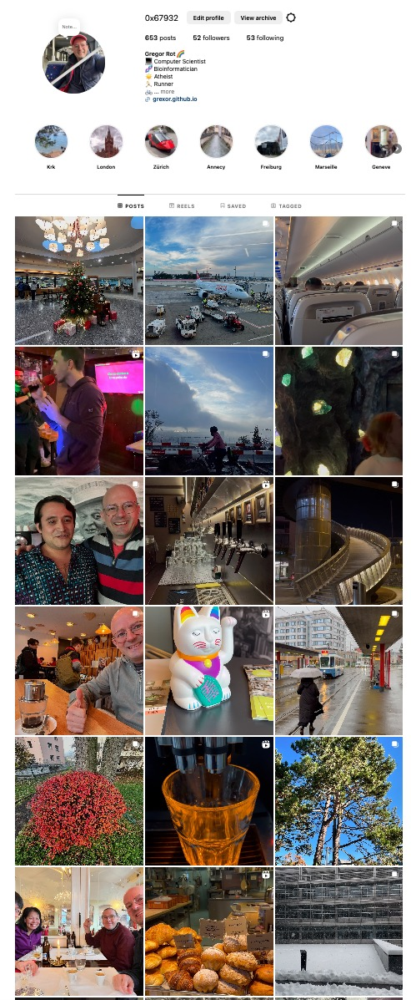

At the end of 2023 I had this crazy idea to do a total social media overload experiment, where I set myself a goal to create 1 media post (images + videos) per day each day of 2024. This is how it went (now it's mid December, so let's hope I can finish).
The first week of January 2024 it was fun and I was looking forward a lot to post and see peoples reactions. And the reactions were very few. I quickly realized nobody really cares what I post. Also I don't have many followers on Instagram and Facebook (I was crossposting everything) so yea, what was I expecting? I think the max(likes) = 10 or something.
After the first month, this whole idea and project really got to me and I was totally fedup with taking pictures and posting every morning the content from the previous day. It also took some kind of strain on me psychologically, because I had this idea in my mind that I need to find something interesting to post. I almost quit the thingy.
However I managed to continue, and over time it became almost a habit. I knew there are only 1-2 people following my posts and giving a like here and there, and I got maybe 2-3 feedbacks "I like your project". But my aunt is still my biggest fan and if it wasn't for her I would probably never have made it and complete the 366 posts (almost there).
Another weird motivation emerged...just the idea of having the whole 2024 year documented, even if only just a small glimpse of what I see, of what is out there, yea, like that. I think that my observation of things and people became more acute...somehow, every day you can easily find something to take a picture or a video of that is beautiful or interesting, I love how this evolved over the year into something very automatic and spontaneous, even if at the beginning it took a lot of mental energy.
And now, with the new year approaching fast, there are a few more posts to do. And in 2025? One idea is to go into the opposide direction, so total social media detox, looking forward to that. One important thing I learned is that social media can be useful, but only to post things connected with work, research, to help other people. A beautiful image or video once in a while is fine, however mostly these posts are totally unrelatable to other people. What social media is usuful for is connecting with people on a topic, on-spot on-topic posts. And overall the "what is out there" project took quite some energy from me + still meaningful for me (to teach me about social media and evolve my sense of observation).
Now it's soon time for more on-topic posts. And keeping interpretations and feelings of what I see out there to myself and few others around me :-)
